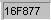
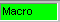
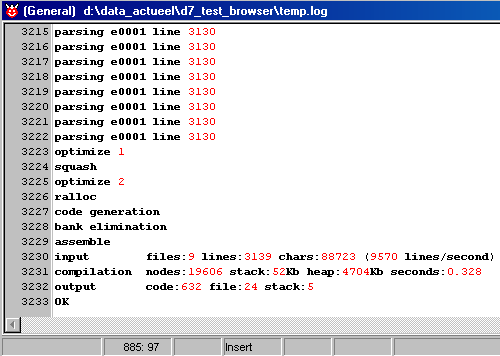

december 2004
JAL CodeEditor
Introduction
JAL is a free Pascal-like compiler for PICs, written by Wouter van Ooijen.
More information can be found on his website: Jal
JAL is fully embedded in JALcc. Besides the standard CodeEditor features, a number of special features are implemented, so JALcc forms a complete IDE around JAL.
ToDo
CodeEditor Overview
The main items of the CodeEditor are (see image below):
The CodeEditor has a full code colored highlighter, and besides all the standard features of the general CodeEditor, it has a number of special features adapted to JAL.The Object Tree, shows a hierachical list of objects in the project (or in the file in case of a library file). The Compiler Results, shows an active logfile of the compiler results. Clicking on an error or warning will jump into the correct editor at the correct place. The Statusbar displays the status of the editor, but all the colored panels in the statusbar also act as buttons which performs certain actions.
CodeEditor Specials
- special keys and actions
- multi-file bookmarks
- special marks
- autocompletion (through popup hint)
- procedure/function hint
- PIBbsc <--> assembler jumping
Special Keys
|
Ctrl+Enter |
jump to declaration of the item under the cursor (if on included file, open and focus the included file) |
|
F1 |
show help info about the item under the cursor - for variables / constants it shows the definition line - for procedures, it shows the description (see Object Explorer Tree below) - for reserved words, it jumps into the help document (see note 1) |
|
F3 Shift+F3 |
Find Next (from search buffer) shift-F3 = Find Previous |
|
F4 Shift+F4 |
Find Next from word under cursor shift+F4 = Find Previous This is very handy, when tracing code in the JAL-assembler listing. |
|
F5 |
show code-tree if code-tree wasn't visible, otherwise refresh code-tree |
|
F6 |
Find Line under cursor in Assembler file This is very handy, when tracing code in the assembler listing. |
|
F7 |
Toggle Templates visibility |
|
F8 |
Goto next Field |
|
F9 Shift+F9 Alt+F9 |
Compile / Upload / Run 1 Compile / Upload / Run 2 Compile Selected / Upload / Run 1 |
|
Ctrl+Shift+ <0..9> |
Set / Clear Bookmark <0..9> |
|
Ctrl+ <0..9> |
Goto Bookmark <0..9> |
|
F10 |
Toggle between mainmenu and active window (standard M$-windows behaviour) |
note 1: The helpfile is assumed to be in the same directory as the first compiler and should have the name "syntax.txt". The item is searched by jumping to the first occurence of the uppercase version of the word under the cursor, preceded by at least 2 spaces.
Right Mouse menu
Pack all source files in ZIP file
Bookmarks
|
Bookmarks are used to jump fast from one position in the code-editor to another position. For JAL-files, this position may even be in another JAL-file. So there's not a set bookmarks for each file, but just one set for all the JAL-files. This may sound as a disadvantage, but in fact it's a great advantage ! Therefore the bookmarks are owned by the main-codefile, and are stored under water in the project file (*.JPR).
The default keys for Bookmarks are Ctrl + Shift + <0..9> set/clear Bookmark <0..9> Ctrl + <0..9> jump to Bookmark <0..9> |
|
|
You can popup a list of the bookmarks of a project through the right-mouse menu.
The list shows all the active bookmarks for JAL files. Each item in the list shows the filename and the X,Y-coordinates of the bookmark. The X-position is not always shown correctly and will give then the wrong value X=1, though clicking on the item will still go to the correct X-position.
Clicking on an item in this list will focus the selected file and jump to the selected bookmark.
Note: the editor can contain more then one bookmark on the same line, but only the last one is visible. In the Bookmark list all bookamarks are visible. |
Special Marks
|
The special marks serves different tasks, like just a bookmarks for the user and breakpoints. The special marks are owned by the file where they reside, and are stored in that file as a special comment line (not visible in the editor). The user can popup a list of all special marks in the project or all special marks in the open files. Special marks can be set/cleared by clicking in the gutter. By each click it will step to the next special mark, after all 5 are stepped through it's deleted. The meaning of these special marks
|
StatusBar

The statusbar gives information mainly about the editor. The colored panels not only give some status information, but also serves as active buttons.
|
|
Pressing this pannel, toggles the visibility of the Object Explorer Tree. F5 makes the Object Tree visible and refreshes the Object Tree |
|
|
position of the caret |
|
|
Indicates there are changes that are not yet stored on disk. Note: in most cases the file will be automatically stored whenever there's a need for. |
|
|
Mode of the editor, can be one of Insert/ Overwrite / ReadOnly |
|
 |
Selected PIC-type, this is needed for most programmers / uploaders |
|

|
Normal JALcc macros will be shown compressed (because that's where they were intended for). With this panel you can toggle between the JALcc macros compressed or expanded. In case the compiler finds an error in this file, the macro is automatically expanded, because the compiler can only deal with the expanded data. |
|
|
Press this button to start the compile action specified by the user. Note: there are 2 different compile actions (F9, Shift-F9), which can each consist of the following actions: compile, upload, run PC-program. Each of the 2 compile actions can be fully controlled by the user. |
Object Explorer Tree
The code explorer displays an hierachical list of the most important elements of a source file or, if the source file is the main-language-file, an hierachical list of all the elements in the total project is displayed.
The treeview gives not only a nice hierarchical view, but it's also an easy way to view the help information about an item, to jump to the declaration of the item (not yet: or to insert the item into the current editor).
On the left the code tree of the main-language file, on the right the code-tree of a library file.
The code explorer can be switched on / off by the colored button in the statusbar. If the code explorer is disabled, it can also be enabled by the F5-key. When the code explorer is enabled, F5 refreshes the code explorer tree.
|
Code Tree |
Editor |
Action |
|
(Ctrl+) Enter DoubleClick on an item without children |
Ctrl+Enter |
Jump to declaration of item |
|
F1 / Right Mouse Button |
F1 |
Display Help info about item |
The help information is shown in a stay-on-top form, so it will be always visible. For procedures, functions and user-macros the text above the procedure, function or user-macro is shown. To accomplish this, this text must be the standard comment style of the selected language, as the example below shows.The help text must be between lines, just above the procedure definition, where each of these special lines must start with: a single quote and 2 consecutive equal signs, "'==". For all other items the help text just consist of the complete line of the declaration of the item.
If the stay-on-top help-form has focus, it can be closed by the normal close button, but also with F1. So pressing F1 once shows the help info, pressing F1 again removes the help info.
Meaning of the different icons in the code-tree
|
Type |
SubType |
Icons |
|
|
Map |
with content |
|
|
|
File |
In Main Path |
|
|
|
In Library Path |
|
||
|
not found |
|||
|
Procedures & Functions |
|
||
|
Macros |
|||
|
Constants
|
Bit |
||
|
Byte |
|
||
|
String |
|
||
|
Universal |
|||
|
Variables |
Normal |
bit |
byte |
|
Volatile |
bit |
byte |
|
|
Pseudo Read "get" |
bit |
|
|
|
Pseudo Write "put" |
bit |
byte |
|
Compiling
Depending on the phase of development, you may have different demands on what "compiling" should do.
For instance, in the beginning of a project, you just want to edit and check the syntactical correctness of the code. When you're further on in the project, you might want to edit and directly test the results of your code in real life.
Therefor JALcc supports direct access to 2 different set of actions, through the keys F9 (or statusbar) and shift-F9. The actions connected to these keys can be fully user-configurable. Easy switching of action sets is accomplished by storing upto 4 sets of compile actions in each projectfile.
Basically the following actions are of interest
For some devices even a tighter integration is implemented. For instance you don't want to start a simulator everytime, but instead after the simulator is once opened, it communicates with JALcc though windows messages.
Compiler Results
After compilation, the log file is automatically loaded into the main window below the codeeditor.
Errors are displayed in bold-red.
Warnings are displayed in bold-blue.
In case of an error, the file with the first error will get focus and the cursor will be placed on the line with the first error.
Clicking on a error or warning will open (or focus if already opened) the file with the selected error and move the caret to the line with the error.
Just correct the error and press F9 to run the compiler again.
The output format of the log file can be controlled through the settings (show debug, show only errors and warnings).
The compiler log file can also be automatically (re-)loaded in a separate codeeditor window (see settings).
Also the assembler file can be automatically (re-)loaded in a separate window. It's easy to jump from PICbsc code into the generated assembler code (see codeeditor).
Compiler Settings
At the left you see the 2 sets, which are assigned to the 2 compile buttons, in this case F9=set1 and shift-F9=set2.
At the right you see the sets, each build out of 3 parts, the middle part colored creamy.
The top part are the real compiler settings, only yielding for this language.
The middel part are the uploader settings, which are shared among all other languages.
The bottom part is the PC-program that should run after uploading. This settings is also shared between all languages.
Fully at the bottom there's a memo, which is automatic loaded and stored, where you can keep your personal notes about the compiler settings.
compiler settings
It may look strange that you can specify a compiler in each set, but one use of it is ti compare 2 different version of a compiler. In set=1 you can choose compiler version-A and in set 2 you can choose compiler version-B. Now by choosing F9 or shift-F9 to compile you get the 2 (possible) different results.
The rest of the settings speaks for themself.
uploader
The uploader will only be invoked, if the compiler generates no errors.
First you can choose the uploader. The general uploader, just launches a windows program of your choice with the appropriate parameters and waits till uploader has finished (if you've set the checkbox). In specifying the parameters you can make use of 2 substitutes, device and hex-filename. In this case only the hex-filename is used.
Bootloader, JALss, Programmer, still to be done. = ...
In the document Uploader/Programmer Examples are examples of the settings for often used uploaders.
Run program after uploading
These parameters can only be specified, if "wait till uploader finished" is set.
Templates
With the templates you easy can insert the language statements and/or (own) procedure calls into your program. Templates visibility is toggled by F7, field substitution is done by F8. As shown below it's easy to add you own procedures to the templates (see for editing the templates JALcc, Code-Editor ).
Here an example of the templates for JAL. Besides all the JAL language elements, in the lower-left corner all functions of the RS232 library are added. Above these RS232 procedures, there are even 2 shortcuts that implements a number of lines for either RS232 communication or SPI communication.
Just after clicking on "audrate = .. asynch_se" (yes this layout has to be improved), the next 4 lines are inserted into the editor and the first field ("baudrate") is selected, so by just starting to type, you'll overwrite this first field. Then, with F8, you can jump to the next field "Byte to send".
Ctrl+Alt(+Shift)-Macros
The implementation of Ctrl-Alt macros is left to the user, see JALcc, Code-Editor for details.
Here an example of a macro implementation for Ctrl-Alt-R, which does exactly the same as the template shown above

ShortString Substitutes
The implementation of the shortstring substitutes is left to the user, see JALcc, Code-Editor for details.
Here an example of the substitution for string "proc"

After pressing "proc", followed by shift-Enter, the next text will be inserted in the Editor at the place of the caret, and the cursor is positioned in such a way that you directly type the name of the function.

Autocompletion by Proposal
The implementation of the proposal substitutes is left to the user, see JALcc, Code-Editor for details.
Here an example, where all RS232 routines are definied.
Now typing "as.." will show a list of substitutes, select one and press Enter to replace the typed text.
Procedure and function hints
As soon as a (already) declared procedure or function is used, JALcc can display a hint about the type and meaning of the function parameters.
Some experiments with this functionality, shows that it behaves annoying and also not correct, because of some bugs (in cthint + ctparams).
Keywords & Commands
These are 2 sets of words which will be highlighted differently. On default the keywords contains all normal language elements. The commands will hold the preprocessor (meta-commands) and fuses commands. (These tables are case-insensitive)

Code Highlighter
In the settings you can see the results of changes directly. JALcc uses a file with the name "EDT_SAMP.JAL" in the program directory as a template to show the actual settings. See for more details JALcc, Code-Editor.
Assembler file
Just an example of the assembler output, which can be automatically opened (or reloaded) after a succesfull compile action.
With F6 in the code editor, you can jump directly to the generated code line(s) in the assembler file (if the file wasn't opened or minimized, it will be loaded and normalized automatically)
The logfile
Just an example of the logfile of the compiler, which can be automatically opened (or reloaded) after a successfull compile action.

(not very interesting, except for the last 4 lines, which are already shown in the code-editor window)
Export
When selecting MainMenu | File | Export, two files are generated, a html-documentation file, extracted from the source code and the source code exported in color-highlighted html. Both files also contain links to each other and to the plain source file.
|
It'll seem that the programs hangs, but looking at the taskbar you'll see an DOS program "Finished...". By clicking on this item in the taskbar, the dosbox will popup. By clicking on the BOLD A in the header of the dosbox, the properties of the generated shortcut will popup (as shown below). |
|
Now check the "close on exit" box in the program tab, close the properties box and close the normal dosbox, and you will never see either of them again. |